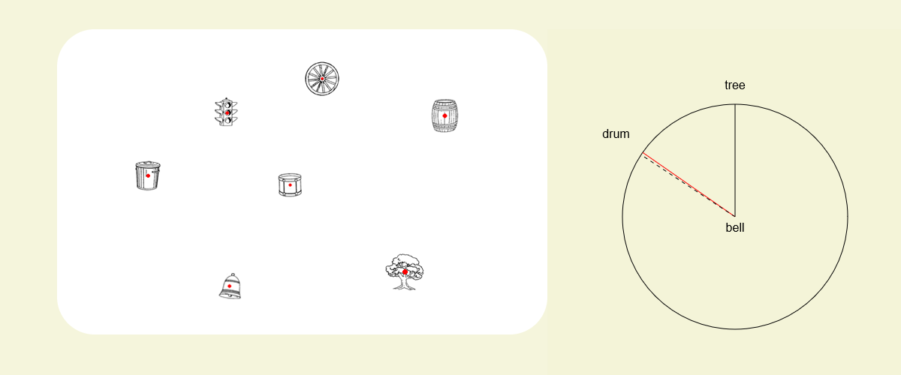

Look at the sample trial below.

Imagine that you are standing at the bell facing the tree.
Your task is to draw a line on the input circle indicating the direction to the drum.
In the sample trial, this line has been drawn for you.
In the actual trials, use your computer mouse to draw this line.
Can you see that if you were at the bell facing the tree the drum would be in the direction shown by the dotted line?
Press the space bar to continue.